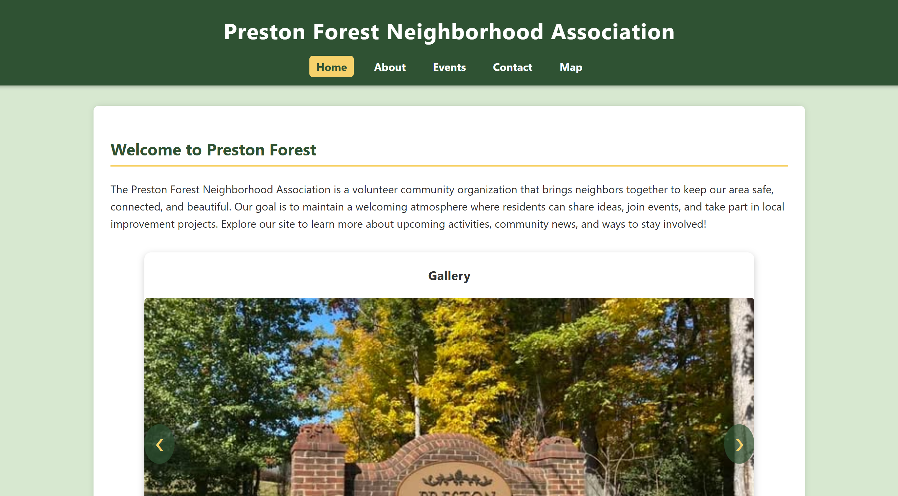

Peer Review 2
Student Evaluated: Lupi, Randall

Website Reviewed:
https://webpages.charlotte.edu/rlupi/itis3135/project/
Evaluation Checklist
- Navigation is consistent and fully functional across all pages.
- No uppercase or spaced filenames — follows requirement.
- Design uses CRAP principles effectively.
- Contrast: White-on-dark header is readable.
- Repetition: Fonts and layout consistent.
- Alignment: Clean center alignment.
- Proximity: Sections grouped properly.
- Header includes site/brand inside an h1 — correct.
- Each page includes proper h2 with page name — correct.
- Brand tagline included and consistent.
- CSS file is consistent and loads correctly.
Client Project Requirements
- Home, About, Events, Contact, and Map all present — ✔
- Content accurately describes the neighborhood — ✔
- Images support theme and branding — ✔
- About page includes history and mission — ✔
- Contact page includes realistic contact list — ✔
- Map page includes embedded Google Map — ✔
Stop, Start, Continue
- Stop: Inconsistent footer spacing between pages.
- Start: Add more descriptive alt text for carousel images.
- Continue: Keeping the site visually consistent and clean.
Additional Notes
- Professional-looking layout across all pages.
- Strong consistency in fonts, spacing, and theme.
- Great use of imagery and branding.
- Navigation is intuitive and user-friendly.
- A few small spacing fixes would polish the experience further.